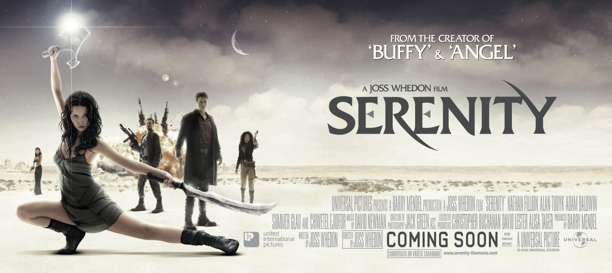

Sinopsis
Esta película finaliza la serie Firefly la cual que se recomienda ver antes de la película. La historia cuenta como la tripulación de la nave Serenity y su capitán, Malcolm Reynolds, embarcan a dos nuevos miembros el doctor Simon Tam y su hermana River Tam, que es una niña prodigio, diseñada genéticamente para tener poderes telepáticos que la permiten ver el futuro inmediato y leer la mente de otras personas.
River está en el punto de mira debido a que escapó del hospital que la retenía gracias a su hermano, hospital perteneciente a la Alianza en el cual se realizan experimentos de control mental para controlar a la población.
Por ello, la Serenity y su tripulación se verán envueltos en interesantes aventuras y luchas que finalmente les pondrá entre los dos ejércitos más grandes de la galaxia, la Alianza Universal y los Ravers, humanos convertidos en caníbales salvajes.
Mientras tanto, la tripulación de la Serenity ha descubierto el secreto mejor guardado de la Alianza y se decide a contárselo a toda la población intergaláctica.
Necesidades
Control Mental


Necesidad
La Alianza Universal manipula la mente de personas para crear super soldados e introducir en ellos ideas y pensamientos. Estas ideas y pensamientos se introducen durante los sueños mediante un aparato conectado a la cabeza del paciente.
Primera aparición:
Realidad Aumentada


Necesidad
En este caso se utiliza la realizad aumentada para recrear las grabaciones de seguridad e investigar qué es lo que ha pasado y cómo desde un punto de vista casi en primera persona. Es interesante pensar en el cómo todo eso podría ser grabado para tener visión 3D del entorno.
Primera aparición:
Hologramas


Necesidad
Los hologramas permiten transmitir un mensaje de persona a persona de una manera más realista, fidedigna e incluso casi humana por lo que podría tener más repercusión que un video. Se ve además como es el almacenamiento del holograma, una especie disco de plástico que se inserta en el reproductor.
Primera aparición:
Naves Espaciales


Necesidad
Las naves y transbordadores espaciales aparecen durante toda la película. Sus tripulantes son capaces de viajar largas distancias por el universo. También pueden fácilmente aterrizar y despegar de cualquier planeta. Además, no parecen difíciles de controlar, podrían asemejarse a los aviones o incluso a los barcos.
Primera aparición:
Sellador de Heridas

Necesidad
Permite cerrar heridas recientes en el momento, de una manera rápida y limpia. Se utiliza una pistola con una espuma selladora. Esto evita perder sangre y que la herida se infecte. En el caso de viajes espaciales, es importante destacar este invento debido a la difícil accesibilidad a hospitales.
Primera aparición:
Compañerxs robot

Necesidad
Robots como compañeros/as sentimentales. Un robot con todas las características de un humano y que interacciona de igual manera, pero artificialmente. Actualmente ya podemos ver ejemplares de este tipo.
Primera aparición:
Videollamadas


Necesidad
Comunicarse a través del espacio con otra persona a distancia años luz mediante una videollamada.
Primera aparición:
Tecnologías involucradas
Tecnologías disponibles en el momento de la producción.
- Videollamadas: aunque no son videollamadas interestelares las videollamadas ya existían cuando esta película fue rodada, de hecho, la primera videollamada fue realizada ni más ni menos que en 1964.
- Naves espaciales: El primer vuelo espacial humano fue el Vostok 1 el 12 de abril de 1961, aunque cierto es que aún nos queda mucho que mejorar para que nuestras naves espaciales actuales sean como las de Serenity. Por lo que podríamos decir que ésta tecnología existe pero que la película todavía nos puede aportar mejoras basadas en esas interfaces y tecnologías imaginarias.
- Sellador de heridas: investigando he descubierto que existe algo parecido, los ejemplos que he encontrado son de la marca 3M y son adhesivos y pegamentos sanitarios para cerrar heridas. Además existen otras soluciones más innovadoras que paran la hemorragia de la herida instatáneamente como se ve en la película: instant sealer.
Tecnologías imaginadas en el momento de la producción.
- Hologramas: los hologramas estáticos existen desde 1962, cuando se consiguió representar un tren gracias a rayos láser. Pero Serenity innova haciendo que los hologramas sean dinámicos, flotando en el aire sin ningún medio de propagación para la luz, y reproduciendo videos, fotos o cualquier otra cosa. Para lograr crear un holograma como el que muestra la película deberíamos ser capaces de proyectar la luz en el aire, sin ningún medio de reflexión. Además para grabar los ho sería necesario una o varias cámaras que permitan grabar 360º alrededor del sujeto.
- Control mental: de toda la vida se ha intentado alterar los pensamientos de la gente, gobiernos e instituciones seguramente han investigado en abundancia para intentar lograr lo que la película muestra, pero por suerte algo así no existía cuando Serenity fue rodada ni existe a día de hoy.
- Compañerxs sentimentales robot: no existían cuando la película fue rodada, sin embargo a día de hoy, en 2018, estos robots ya existen y están muy avanzados (tanto masculinos como femeninos). Cuando la película fue creada los ordenadores no tenían el poder computacional necesario para simular una inteligencia artificial que un robot humanoide necesita. Sin embargo, hoy en día, y con los avances en la tecnología y en la computación, eso ya es posible.
- Realidad Aumentada: ¡Ojo! Realidad aumentada, que no Realidad Virtual. De la realidad aumentada también hemos oído desde hace tiempo pero no como nos la plantea esta película, la tecnología que aquí se ve no existe todavía, pero presenta buenas ideas para su desarrollo.
Impacto

No he encontrado evidencias de impacto directo de la película en la vida real, aunque podríamos sacar unas cuantas conclusiones: por un lado, el sellador de heridas que vemos en la película y el que vemos en el video que he enlazado tienen cierta similitud y del último no he encontrado fechas de creación por lo que, si suponemos que fue inventado después de producción de la película, podríamos decir que Serenity tiene cierto impacto en este aspecto.
Por otro lado, Serenity puede haber tenido influencia en la creación de robots de compañía ya que actualmente estos están siendo fabricados y comercializados y sin embargo, en tiempo de producción no existían.
Además durante la película se ven diversas interfaces imaginadas que pueden servir de base para futuros inventos, un ejemplo es cuando durante la lucha espacial entre los Ravers y la Alianza se ve un mapa interactivo en el que se ve el movimiento de todas las naves espaciales, como si fuera el radar de un barco. O la manera en la que los hologramas son transmitidos y mostrados.

Referencias
- PC World, History of Video Calls, https://www.pcworld.idg.com.au/slideshow/...facetime/, Última visita: 21 Marzo de 2018
- Wikipedia, Serenity, https://es.wikipedia.org/wiki/Serenity_(pel%C3%ADcula), Última visita: 21 Marzo de 2018
- RevMedx, XSTAT Device, https://www.revmedx.com/xstat, Última visita: 21 Marzo de 2018
- El Español, Éste es el nuevo robot sexual para mujeres: pene biónico y abdominales, https://www.elespanol.com/ciencia/.../279222945_0.html, última visita: 21 Marzo de 2018
- Vix, El primer robot sexual se prepara para debutar, https://www.vix.com/es/tecnologia/...prepara-para-debutar, Última visita: 21 Marzo de 2018